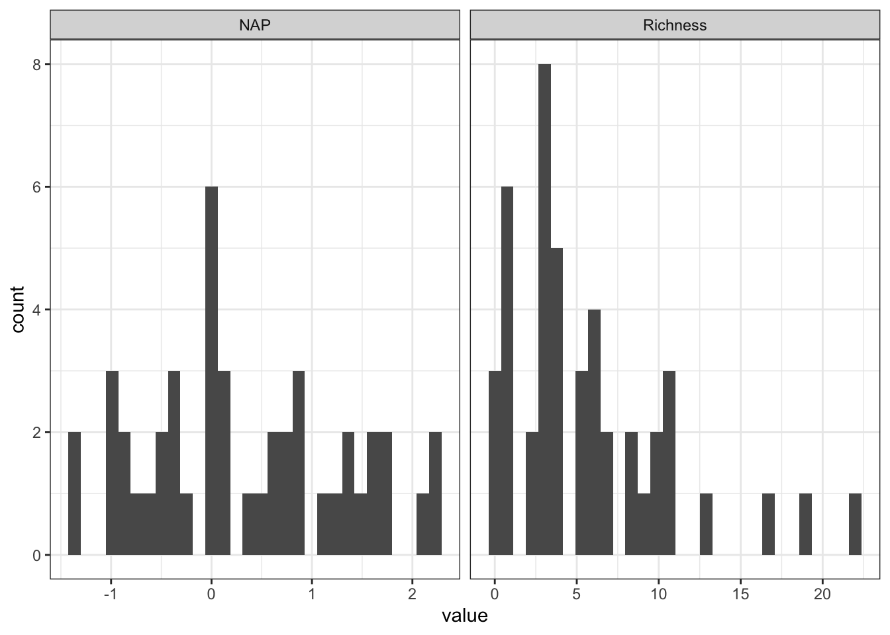
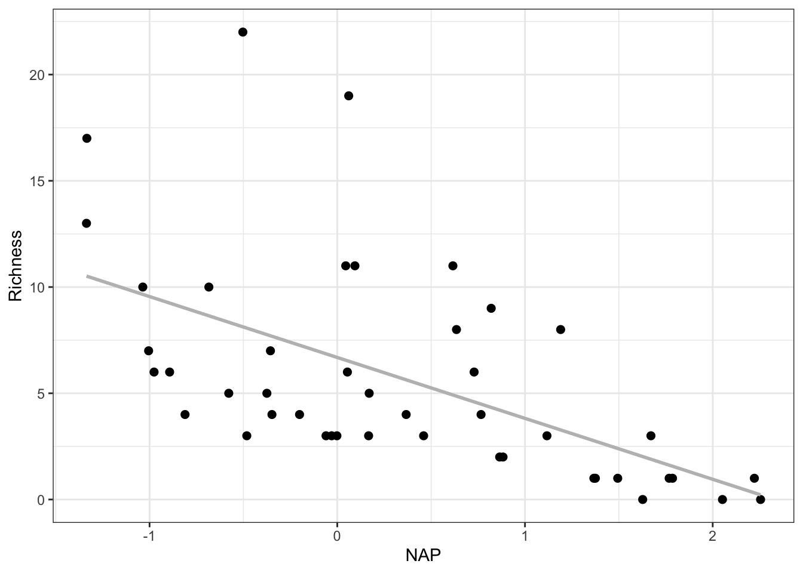
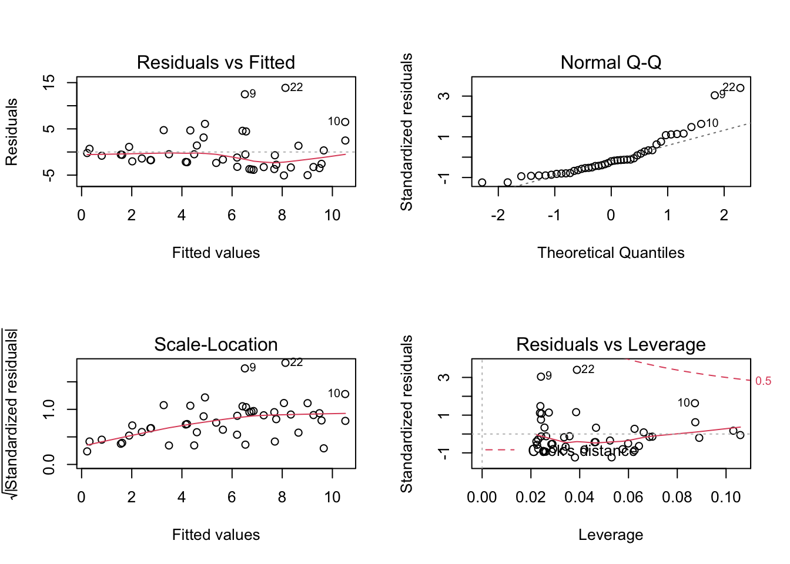
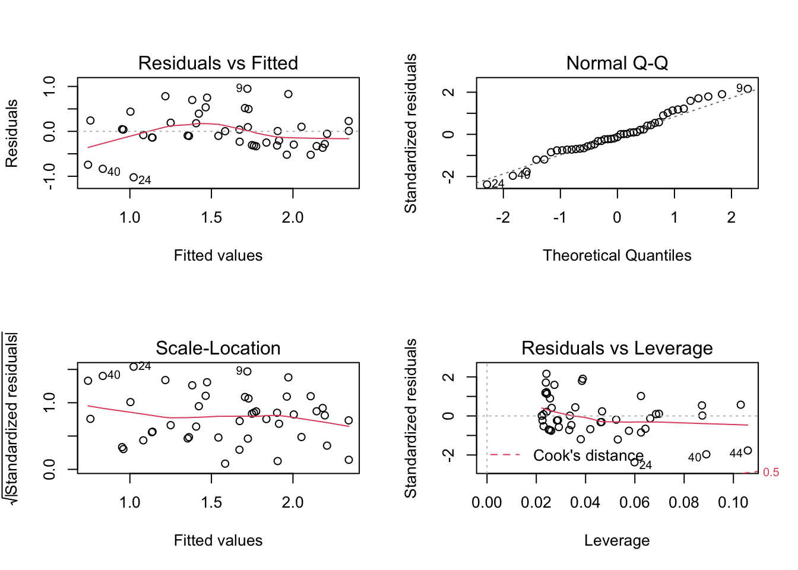
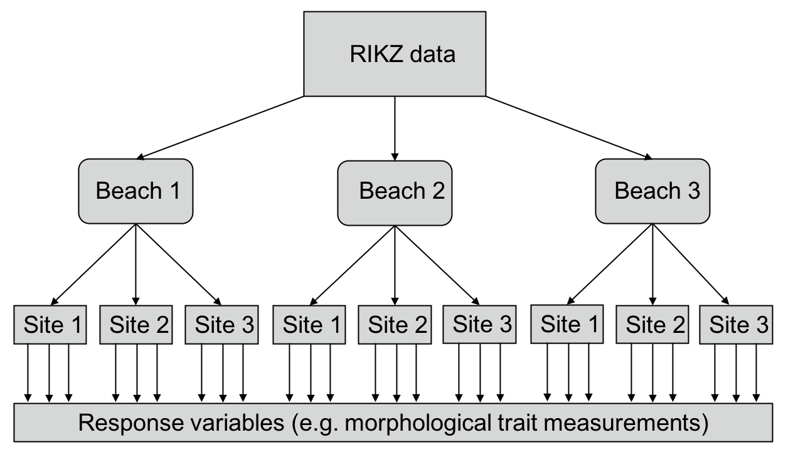
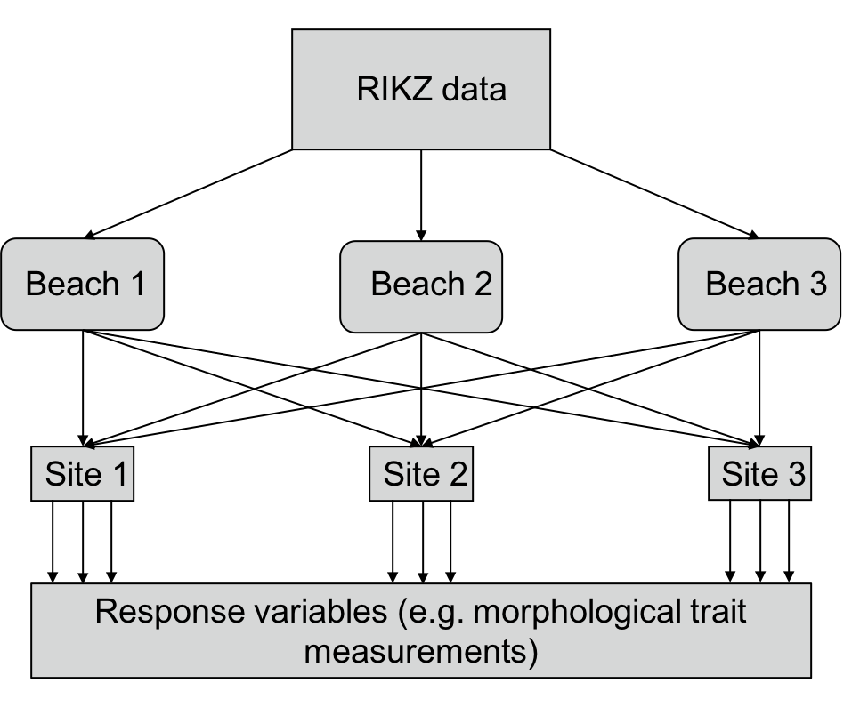

Understand how linear mixed models are fitted via maximum liklihood.
Understand the differences between fixed and random effects.
Apply random effects models to nested experimental data.
Apply mixed models to data of Fitzpatrick et al.
11.1.2 Lesson outline
Describe the structure of a linear mixed model, the form of the likelihood function, and how fixed/random effects are estimated. Discuss how variance components can be estimated.
Familiarize ourselves with the RIKZ data.
Perform standard linear regression on the RIKZ data. Check the assumptions of multiple regression, including the independence of observations.
Explore ways to overcome this violation without the use of mixed effects modeling.
Apply random intercept, random intercept and slope, and random-effects only models to RIKZ data. Discuss the differences between these models.
Explore to how use mixed-effects models for more deeply nested data.
Explore differences between nested and crossed random effects.
11.1.3 Required packages
tidyverse
ggalt
lme4
lmerTest
ggalt
MuMIn
sjmisc
11.2 Why linear mixed models?
Last class we discussed how to apply linear models to data (e.g., linear regression, ANOVA, etc.) to understand the relationship between predictor (i.e., independent) and response (i.e., dependent) variables. As a reminder, the usual assumptions are:
Normality of the errors
Homogeneity of error variances
Independence of observations
Although one can model the distribution of the data differently (e.g., using transformations or GLMMs), serious violations of independence and equality of error variances can pose problems and result in biased parameter estimates and \(p\)-values. Additionally, ecological and evolutionary data are often very messy, with a lot of noise, unequal sample sizes, and missing data. Thankfully, linear mixed effects models provide us with an estimation and inference framework which alleviates violations of these assumptions. Mixed effects models also allow us to better understand the sources of variation in the data; in quantitative genetics, for example, the goal of many analyses is to understand how much variation in a trait is additive, and this involves estimating what is called the additive genetic variance using a mixed effects model. Like linear models of other kinds, mixed effects models can be fit via maximum likelihood.
where \(\boldsymbol{y}_i\) is the \(n_i \times 1\) response vector for observations in the \(i\)th group (\(i = 1,\dots,M\)). \(\boldsymbol{X}_i\) is an \(n_i \times p\) matrix of fixed effects for the observations in group \(i\), and \(\boldsymbol{\beta}\) is a \(1 \times p\) vector of fixed effects. Similarly, \(\boldsymbol{Z}\) is a \(n_i \times q\) matrix of \(q\) random effects associated to the observations in group \(i\), and \(\boldsymbol{b}_i\) is a \(q \times 1\) vector of random coefficients for group \(i\). This is called the Laird-Ware form of the linear mixed model.
The random effect coefficients \(b_{i1},\dots,b_{iq}\) for group \(i\) are assumed to be \(\text{Normal}(0,\psi_i^2)\). Furthermore, \(\text{Cov}(b_i,b_{i'}) = \psi_{ii'}\) so that the random effects need not be independent of each other. In the more compact notation, \(\boldsymbol{b} \sim \text{Normal}(0,\boldsymbol{\Psi}).\) Other distributions can be used to model variability in the random effects, but the choice of a Normal distribution has advantages which we will not get into here. In a similar spirit, to make estimation and inference of LMMs tractable, the errors \(\boldsymbol{\varepsilon}\) are assumed to be \(\text{Normal}(0,\boldsymbol{\Lambda})\), where \(\boldsymbol{\Lambda}\) is the matrix of error variances (on the diagonal) and co-variances (on the off-diagonal).
Importantly, we interested in random effects insofar as they can provide information and help form inferences about the distribution of response measurements at different levels. Because the random effects are unobserved, we must first estimate the fixed effects. The assumptions we have made about the random effects and error variances imply \(\boldsymbol{y}|\boldsymbol{b} \sim \text{Normal}(\boldsymbol{X} \boldsymbol{\beta}, \boldsymbol{\Sigma})\), where \(\boldsymbol{\Sigma} = \boldsymbol{Z} \boldsymbol{\Psi} \boldsymbol{Z}' + \boldsymbol{\Lambda}\). Conditional on the random effects, the data are independent. The log-likelihood for the data is
11.3.1 Estimating fixed, random effects with \(\boldsymbol{\Sigma}\) known
Maximizing the log-likelihood with respect to \(\boldsymbol{\beta}\) gives \(\boldsymbol{\hat{\beta}_{\text{MLE}}} = (\boldsymbol{X}' \boldsymbol{\Sigma}^{-1}\boldsymbol{X})^{-1} \boldsymbol{X}' \boldsymbol{\Sigma}^{-1} \boldsymbol{y}.\) This, as in standard regression theory, is the best linear unbiased estimator (BLUE) of the fixed effects. In addition to the estimation of fixed effects, prediction1 of random effects is often of interest. The best linear unbiased predictor (BLUP) of the random effects is \(\boldsymbol{\hat{u}} = \boldsymbol{\Psi}\boldsymbol{Z}'(\boldsymbol{Z} \boldsymbol{\Psi} \boldsymbol{Z}'+\boldsymbol{\Lambda})^{-1}(\boldsymbol{y}-\boldsymbol{X}\boldsymbol{\hat{\beta}})\).
Note: the ML estimator of the random effects is biased, so Restricted ML Estimation (REML) is often used. It’s generally good to use REML when you are interested in the magnitude of the random effects variances, but do not do this when comparing models with different fixed effects.
11.3.2 Estimation and inference when \(\boldsymbol{\Sigma}\) is unknown
In the preceding discussion, we have assumed the variance-covariance matrices \(\boldsymbol{\Psi},\boldsymbol{\Lambda}\). This is rarely the case. Sometimes, modelers will specify variance-covariance matrices of a certain form (so that there are not so many parameters the model becomes impossible to fit). Otherwise, it is advisable to use methods that estimate the variance components from the data. In today’s lecture, we will have to estimate varience components to get a sense of how much random effects matter and shape variation in the data. The math that goes into correctly estimating varience components is quite complicated, but we’ll mention that an algorithm known as expectation-maximization can often be used.
11.3.3 On the difference between fixed and random effects
One of the most tricky things about mixed effects modeling is deciding what co-variates are “fixed” and which are “random” — sometimes, a co-variate can be both! The meaning of “fixed” and “random” can, ironically, be variable depending on in what context they are used, and who they are used by. As a rule of thumb, a random effect is one which is drawn from a population of effects and can be used to combine information from different groups to learn about the properties (e.g, the variance) of that distribution.
Throughout the lecture, we will be making use of the RIKZ dataset. The data are as follow: for each of 9 intertidal areas (denoted ‘Beaches’), the researchers sampled five sites (denoted ‘Sites’) and at each site they measured abiotic variables and the diversity of macro-fauna (e.g. aquatic invertebrates). Here, species richness refers to the total number of species found at a given site while NAP (i.e. Normal Amsterdams Peil) refers to the height of the sampling location relative to the mean sea level and represents the amount of food available for birds, etc. The data are described in more detail in Zuur et al. (2009).
rikz_data <- rikz_data %>%mutate(Beach =as.factor(Beach))# we can see that the data contains 45 rows (observations). # as expected, observations were taken across 9 beaches, each with 5 sites. # we have encoded 'Beach' as a factor...# this will facilitate plotting and its use as a random effect downstream.
`stat_bin()` using `bins = 30`. Pick better value with `binwidth`.

# question 3ggplot(rikz_data, aes(x = NAP, y = Richness)) +geom_point(size =2) +geom_smooth(method ="lm", se = F, color ="gray")
`geom_smooth()` using formula = 'y ~ x'

11.4.2 Limitations of simple linear models
Let’s go ahead and perform a linear regression to examine the relationship between species richness and NAP, pooling data across all beaches to see if it matches our expectation based on the graph.
model <-lm(Richness~NAP, data=rikz_data)summary(model)
Call:
lm(formula = Richness ~ NAP, data = rikz_data)
Residuals:
Min 1Q Median 3Q Max
-5.0675 -2.7607 -0.8029 1.3534 13.8723
Coefficients:
Estimate Std. Error t value Pr(>|t|)
(Intercept) 6.6857 0.6578 10.164 5.25e-13 ***
NAP -2.8669 0.6307 -4.545 4.42e-05 ***
---
Signif. codes: 0 '***' 0.001 '**' 0.01 '*' 0.05 '.' 0.1 ' ' 1
Residual standard error: 4.16 on 43 degrees of freedom
Multiple R-squared: 0.3245, Adjusted R-squared: 0.3088
F-statistic: 20.66 on 1 and 43 DF, p-value: 4.418e-05
It appears there is a significant relationship between NAP and species richness! Next we assess if the assumptions (equality of variances, normality) of the linear model are met. Thankfully, plot() applied to a linear model does all of diagnostic work for us.
par(mfrow=c(2,2)) # look at all 4 plots togetherplot(model)

The residual plot suggests that the homogeneity assumption is violated (increasing variance in the residuals with increasing fitted values). Similarly, the QQ plot suggests non-normality (points falling off of the dotted line). The scale-location plot shows us that the assumption of equal variance between groups (homoscedasticity) is violated, since the residuals are not spread equally along predictors, but instead the range of residuals is wider as the x-axis increases. Finally, residuals vs. leverage helps to identify influential data points on the model (e.g., outliers, but also non-outlier points that don’t follow the trend) – look for points with a high Cook’s distance, outside the dashed line(s) on the top-right or bottom-right. Lucky for us, there are no highly-influential points; in fact, we can barely see the Cook’s distance lines.
11.4.2.1 Transformations to the rescue?
Let’s try a third root transformation to see if that helps:
model_3rd_root_transform <-lm(Richness^(1/3)~NAP, data=rikz_data)par(mfrow=c(2,2)) # look at all 4 plots together plot(model_3rd_root_transform)

A third-root transformation of the response variable (i.e. Richness) seems to alleviate our three problems. Nonetheless, for the analyses in this section, we will ignore violations of these assumptions and carry out the rest of the analysis with un-transformed data for the purpose of highlighting the fact that these data violate yet a key assumption, independence of observations.
11.4.3 Non-independence of observations
The species richness data come from multiple sites within multiple beaches. While each beach may be independent, sites within a beach are likely to have similar species richness due simply to their proximity within the same beach. In other words, observations among sites within a beach are not independent. Another way of saying this is that the data are nested. Nesting in this sense is a product of the experimental design (i.e., we chose to sample 5 sites within each beach) and not necessarily of the data itself. Other types of nested data include: sampling the same individual pre- and post-treatment or sampling them multiple times (i.e., repeated measures), or sampling multiple tissues from the same individuals.
11.4.4 Ways to deal with non-independence in the data
One way to account for the non-independence of observations would be to run a separate analysis for each beach. In this case, each analysis only has five observations to work with, and we have to run multiple tests. This means we run the risk of obtaining spuriously significant results by chance.
models <-NULLfor (i in1:9){ data <- rikz_data %>%subset(Beach == i) models[[i]] <-cbind(summary(lm(Richness~NAP, data = data))$coefficients[,c(1,4)],Beach = i)}do.call(rbind, models)
Estimate Pr(>|t|) Beach
(Intercept) 10.8218944 0.0006886412 1
NAP -0.3718279 0.6938082209 1
(Intercept) 13.3456944 0.0054952211 2
NAP -4.1752712 0.1282157989 2
(Intercept) 3.4007021 0.0035446596 3
NAP -1.7553529 0.0362969533 3
(Intercept) 3.0877160 0.0005459215 4
NAP -1.2485766 0.0061310867 4
(Intercept) 12.7828276 0.0173369425 5
NAP -8.9001779 0.0483908629 5
(Intercept) 4.3246341 0.0008653329 6
NAP -1.3885120 0.0147940222 6
(Intercept) 3.5206265 0.0079312538 7
NAP -1.5176126 0.0579432596 7
(Intercept) 4.9514552 0.0022220969 8
NAP -1.8930665 0.0170191039 8
(Intercept) 6.2950533 0.0447894638 9
NAP -2.9675304 0.1850319458 9
Alternatively, one could account for the fact observations are non-independent by including a term for each beach in the model, and estimate a separate effect for each level.
In this case, adding terms to account for between-beach differences did not change our interpretation of the association between NAP and species richness (which is still negative and significant). However, the inclusion of additional terms in this way will sometimes change the estimated effect of other terms in the model and alter their interpretation. The question we need to ask ourselves here is: Do we really care about differences between beaches represented in the data? These beaches were a random subset of all beaches that could have been chosen — their effects on the response are best modeled as random variables.
model_beaches <-lm(Richness ~ NAP + Beach, data = rikz_data)summary(model_beaches)
Call:
lm(formula = Richness ~ NAP + Beach, data = rikz_data)
Residuals:
Min 1Q Median 3Q Max
-4.8518 -1.5188 -0.1376 0.7905 11.8384
Coefficients:
Estimate Std. Error t value Pr(>|t|)
(Intercept) 9.8059 1.3895 7.057 3.22e-08 ***
NAP -2.4928 0.5023 -4.963 1.79e-05 ***
Beach2 3.0781 1.9720 1.561 0.12755
Beach3 -6.4049 1.9503 -3.284 0.00233 **
Beach4 -6.0329 2.0033 -3.011 0.00480 **
Beach5 -0.8983 2.0105 -0.447 0.65778
Beach6 -5.2231 1.9682 -2.654 0.01189 *
Beach7 -5.4367 2.0506 -2.651 0.01196 *
Beach8 -4.5530 1.9972 -2.280 0.02883 *
Beach9 -3.7820 2.0060 -1.885 0.06770 .
---
Signif. codes: 0 '***' 0.001 '**' 0.01 '*' 0.05 '.' 0.1 ' ' 1
Residual standard error: 3.06 on 35 degrees of freedom
Multiple R-squared: 0.7025, Adjusted R-squared: 0.626
F-statistic: 9.183 on 9 and 35 DF, p-value: 5.645e-07
11.4.5 Random intercept model
To estimate the variance among beaches and account for the non-independence of sites within beaches, we include Beach as a random effect in our model. NAP remains a fixed effect. As such, we model a separate \(y\)-intercept (i.e. Richness at NAP both = 0) for each beach and estimate the variance around this intercept. A small variance means that variances between beaches are small whereas a large variance means the opposite. We can run mixed-effects models using the lmer function from the lme4 R package and obtain parameter estimates using the lmerTest package. The question we are now asking is: What is the influence of NAP on species richness, accounting for the non-independence of sites within each beach?
library(lme4)library(lmerTest)# Random intercept model with NAP as fixed effect and Beach as random effectmixed_model_IntOnly <-lmer(Richness~NAP+(1|Beach), data=rikz_data, REML=FALSE)summary(mixed_model_IntOnly)
Linear mixed model fit by maximum likelihood . t-tests use Satterthwaite's
method [lmerModLmerTest]
Formula: Richness ~ NAP + (1 | Beach)
Data: rikz_data
AIC BIC logLik deviance df.resid
249.8 257.1 -120.9 241.8 41
Scaled residuals:
Min 1Q Median 3Q Max
-1.4258 -0.5010 -0.1791 0.2452 4.0452
Random effects:
Groups Name Variance Std.Dev.
Beach (Intercept) 7.507 2.740
Residual 9.111 3.018
Number of obs: 45, groups: Beach, 9
Fixed effects:
Estimate Std. Error df t value Pr(>|t|)
(Intercept) 6.5844 1.0321 9.4303 6.380 0.000104 ***
NAP -2.5757 0.4873 38.2433 -5.285 5.34e-06 ***
---
Signif. codes: 0 '***' 0.001 '**' 0.01 '*' 0.05 '.' 0.1 ' ' 1
Correlation of Fixed Effects:
(Intr)
NAP -0.164
The (1|Beach) is the random effect term, where the 1 denotes this is a random-intercept model and the term on the right of the | is a nominal variable (or factor) to be used as the random effect. lmer returns log-likelihood values for the model, as well as information theoretic criteria (AIC, which stands for Akaike information criterion) used to evaluate the goodness-of-fit of the model and preform model selection.
lmer also returns an estimated variance for the random effects. For this data, the variance associated with the effect of beach is 7.507. By dividing the variance of beach by the total variance, we see that differences between beaches account for (7.507/(7.507+9.111))*100=45% of the residual variance (i.e., variance left over after accounting for the fixed effects) in the model. Note the total variance explained by random effects (i.e., the sum of the variance components from all the random effects, including the residuals). This allows us to calculate the importance of each random effect relative to each another (as measured by how much of the residual variance it explains), which is crucial to note when there is more than one random effect.
We can visualize the fitted values for this model as follows:
rikz_data <- rikz_data %>%mutate(fit_InterceptOnly=predict(mixed_model_IntOnly))# uses model to predict Richness at NAPggplot(rikz_data, aes(x=NAP, y=Richness, colour=Beach)) +# fixed effect regression line (read values off of model output above)geom_abline(aes(intercept=6.5844, slope=-2.5757), linewidth=2) +# fitted values (i.e., regression lines) for each beachgeom_line(aes(y=fit_InterceptOnly), linewidth=1) +geom_point(size=3)
The thick black line corresponds to the fitted values associated with the fixed-effect component of the model. The thin coloured lines correspond to the fitted values estimated for each beach. As you can see, they all have separate intercepts, as expected. As the estimated variance of the random effect increases, these lines would become more spread out around the thick black line. If the variance was \(=0\), all the coloured lines would coincide with the thick black line.
11.4.6 Random intercept-slope model
The model above allows the intercept for each beach to vary around the population-level intercept. This means that each beach may differ in species richness, but how that respond to NAP remains the same across beaches. However, what if beaches don’t only vary in their mean richness, but the richness on each beach also varies in its response to NAP?
In a standard regression, this would amount to including NAP, Beach and interaction effects in the model. Of course, including such fixed-effects here would consume way too many degrees of freedom and we already decided we don’t really care about differences between beaches per se. Thankfully, we can still allow beaches to vary in the response to NAP using a random intercept-slope model.
We can fit the random intercept-slope model to these data using the code below.
Linear mixed model fit by maximum likelihood . t-tests use Satterthwaite's
method [lmerModLmerTest]
Formula: Richness ~ NAP + (1 + NAP | Beach)
Data: rikz_data
AIC BIC logLik deviance df.resid
246.7 257.5 -117.3 234.7 39
Scaled residuals:
Min 1Q Median 3Q Max
-1.7985 -0.3418 -0.1827 0.1749 3.1389
Random effects:
Groups Name Variance Std.Dev. Corr
Beach (Intercept) 10.949 3.309
NAP 2.502 1.582 -1.00
Residual 7.174 2.678
Number of obs: 45, groups: Beach, 9
Fixed effects:
Estimate Std. Error df t value Pr(>|t|)
(Intercept) 6.5818 1.1883 8.8936 5.539 0.000377 ***
NAP -2.8293 0.6849 7.9217 -4.131 0.003366 **
---
Signif. codes: 0 '***' 0.001 '**' 0.01 '*' 0.05 '.' 0.1 ' ' 1
Correlation of Fixed Effects:
(Intr)
NAP -0.810
optimizer (nloptwrap) convergence code: 0 (OK)
boundary (singular) fit: see help('isSingular')
The above model now allows both the intercept and slope of the relationship between Richness and NAP to vary across beaches. The only difference here is the additional variance component in the random effects, which estimates the variance in slopes across beaches. It also includes a Corr term, which estimates the correlation between the intercept and slope variances. A correlation of -1, for example, would imply that beaches with larger intercepts also have more steeply negative slopes, as can be seen in the figure below.
Note that it is not always necessary to specify fixed effects, in the same way that it is not always necessary to specify random effects. For example, we could run the following model which would allow us to solely estimate the variation in species richness between beaches. Here, 1 is used as a placeholder to indicate no fixed effects are fitted.
mixed_model_NoFix <-lmer(Richness~1+(1|Beach), data=rikz_data, REML=TRUE)### note we are using REML because we are not interested in the fixed effects### varience component estimation is more accurate with REMLsummary(mixed_model_NoFix)
Linear mixed model fit by REML. t-tests use Satterthwaite's method [
lmerModLmerTest]
Formula: Richness ~ 1 + (1 | Beach)
Data: rikz_data
REML criterion at convergence: 261.1
Scaled residuals:
Min 1Q Median 3Q Max
-1.7797 -0.5070 -0.0980 0.2547 3.8063
Random effects:
Groups Name Variance Std.Dev.
Beach (Intercept) 10.48 3.237
Residual 15.51 3.938
Number of obs: 45, groups: Beach, 9
Fixed effects:
Estimate Std. Error df t value Pr(>|t|)
(Intercept) 5.689 1.228 8.000 4.631 0.00169 **
---
Signif. codes: 0 '***' 0.001 '**' 0.01 '*' 0.05 '.' 0.1 ' ' 1
In previous lectures we emphasized how regression models seek the “best fit model” (that is: the one that maximizes the liklihood of the observed data under some parametric model, e.g., normal errors, for the generative process). But we need to be careful that the “best fit” might not be a “good fit” after all! To inspect model fit, we look to the coefficient of determination, or \(R^2\), which represents the percentage of variance in your data that is explained by your model. In simple linear models, the \(R^2\) value is rather straightforward and included in the summary output. In a mixed model, this is slightly more complicated, as we now have to think about about variance explained by the fixed effects as well as random effects. Here, we introduce an extension to the concept of \(R^2\):
Conditional \(R^2\) (\(R_c^2\)): Variance explained by both fixed and random effects
Marginal \(R^2\) (\(R_m^2\)): Variance explained by fixed effects only
And of course R has handy functions to help us calculate these:
library(MuMIn)r.squaredGLMM(mixed_model_IntOnly)
R2m R2c
[1,] 0.282994 0.606889
r.squaredGLMM(mixed_model_IntSlope)
R2m R2c
[1,] 0.3150674 0.7143823
We see that \(R_c^2\) is a lot larger than \(R_m^2\) in both cases, meaning that most of the variance in our data is actually captured by our random effects (i.e., due to differences between beaches) – good thing we included them! In general, \(R_m^2\) of \(\sim 10%\) is considered a good day in field ecology. Since NAP explained \(\sim 30\%\) of the variance in species richness in both cases, we can conclude that the models are performing well!
Now that we have specified these models and see that they both perform reasonably well, how do we know which to choose? After all, they all provide slightly different estimates for the effects of NAP and P-values.
Our model structure should be informed by our hypothesis of “reality”, and this provides one way to choose between models. But in cases where we are unsure, or trying to compete different hypotheses (e.g., trying to figure out whether the species richness and NAP relationship differ by beach), then just knowing that both models fit well isn’t good enough anymore — we need a way to determine which model is a better fit to the data, controlling for the number of parameters fitted. We will come back to this question in the next lecture when discussing model selection.
11.5 Deeply nested and crossed effects
Have a look back at the original diagram showing the layout of the RIKZ data and the dataset itself. Every site within each beach is associated with only one observation for each of the variables (e.g. species richness). As such, we used mixed-effects modeling to account for the variance among these five observations within each of the five beaches. But what about if each of those sites additionally included multiple samples (e.g. measurements of morphological traits of multiple individuals of a species), as in the diagram below?. We would the need to account for the variance both within sites and within beaches.

Diagrammatic representation of what the RIKZ data would look like if it were more deeply nested (i.e., if each site had multiple samples taken)
Thankfully, lmer allows us to do this quite easily. To account for variation within sites and within beaches, we would need to modify our existing random effect term. We would write this as (1|Beach/Site), which means “Site nested within beach”. This expands to — and can also be written as (1|Beach) + (1|Beach:Site). Thus, we are modeling a separate intercept for every beach and for every site within every beach.
It is worth emphasizing that the ‘Site 1’ from ‘Beach 1’ is not the same as ‘Site 1’ from ‘Beach 2’ and this was true of the original data as well. These sites are distinct; despite carrying the same label, they are occurring on distinct beaches and are thus not the same site. This is what makes the data nested.
An alternative design to this would be crossed effects, in which any site could be observed on any beach (sometimes, this is called “multiple membership”). If all sites were observed on all beaches, this would be a fully crossed effect whereas if some sites were observed on only some beaches, this would be a partially crossed effect. If every site occurred on every beach, then we would code this as (1|Beach) + (1|Site). Crossed effects are shown in the diagram below. This may sound confusing; the easiest way to think about it is that if the data are not nested, they are crossed.

Diagrammatic representation of what the RIKZ dataset would look like if it were fully crossed (i.e., if every site occurred on every beach)
11.5.1 Example
We will illustrate deeply nested and crossed random effects in a single model using data from a greenhouse experiment conducted at UTM. The researchers were interested in understanding whether soil microbes collected within populations of invasive species can help a second generation of invasive plants perform better. This is called plant-soil feedbacks (PSF), in which plants influence the soil that they grow in, which in turn benefits future generations of the same species. The researchers were especially interested to see if PSF can occur even soils collected from the edge of the species’ range, at which the invader is still in the process of spreading.
To do this, soil was collected from 14 sites in a subarctic region. These 14 sites were found in 3 main location: the town, the airport, and the regional studies centre, which was about 20 km away. At each site, soil was collected from within an existing population of invasive Linaria vulgaris (common toadflax) and about 2 meters away outside of the population. Then, soil was left live to preserve microbes, or sterilized. This produced four treatments:
Live invaded soil (microbes from invaded soils present)
Sterile invaded soil
Live uninvaded soil (microbes from uninvaded soils present)
Sterile uninvaded soil
The authors collected L. vulgaris seeds from two sources, germinated them and measured their initial height before transplant into soil treatments. In the greenhouse, L. vulgaris was randomly assigned to a soil treatment and individually planted, with soil coming from one of 14 sites, found in one of 3 locations. Plants were grown in soil treatments for 6 weeks, and harvested plant material at the end of the experiment to weigh, and biomass (g) was recorded for each plant (\(n = 224\)).
Is this nested or crossed? Or both? Soil was collected only from one site, and each site was only part of one location (sites nested within location). Given that sites could contain soil that is more similar to soil within a location (site effect), and the same is true for location (location effect), this non-independence needs to be accounted for. However, seeds from both seed sources (1 and 2) were planted in soils from all sites, and seeds from one source may be more similar to each other than seeds from the second source.
The code below provides a useful way of examining the data to assess whether terms are nested or crossed and then fits a mixed-effects model to the biomass data. Note that this data is currently in the process of manuscript submission - to protect privacy, some data have been redacted and modified2.
The question we are interested in here is:
Does invasion status, sterilization, or the interaction influence growth of L. vulgaris plants?
# A tibble: 3 × 15
location `1` `2` `3` `4` `5` `6` `7` `8` `9` `10` `11`
<chr> <int> <int> <int> <int> <int> <int> <int> <int> <int> <int> <int>
1 airport NA NA 16 NA NA NA NA NA 16 16 16
2 centre NA NA NA 16 16 NA NA NA NA NA NA
3 town 16 16 NA NA NA 16 16 16 NA NA NA
# ℹ 3 more variables: `12` <int>, `13` <int>, `14` <int>
In this case, we see that seeds from both sources occur on every site equally. In other words, seed source and site are fully crossed.
Remember also that we collected initial height data, as seeds will vary in their growth ability. Let’s now look at variation in initial height across the sites.
Continuous variables should not be treated as a random effect. This is because it makes no sense to ask what the variance is across a continuous variable. Instead, what you are doing is forcing a continuous variable to be used as a categorical effect, and estimating a random intercept for each value of the continuous variable. So, if we were to make initial_height as a random effect, we would be estimating an intercept and/or slope for each level of initial_height, which is not informative. Continuous variables are often modeled as fixed effects if we believe they are important to the model due to the methods or data collection. In this case, initial heights of plants did vary, from 1.6 cm to 0.2 cm, so we are choosing to include it in our model.
Let’s go ahead and fit our model. Note that this is a random intercept model, not a random slope-intercept model (i.e., the slope is the same throughout sites).
biomass_model <-lmer(biomass ~ invaded_status * sterile_status + initial_height +# initial height as a fixed effect (1|source) +# seed source fully crossed (1|location/site_number), # site nested within locationdata = biomass)summary(biomass_model)
Linear mixed model fit by REML. t-tests use Satterthwaite's method [
lmerModLmerTest]
Formula: biomass ~ invaded_status * sterile_status + initial_height +
(1 | source) + (1 | location/site_number)
Data: biomass
REML criterion at convergence: -409.8
Scaled residuals:
Min 1Q Median 3Q Max
-1.7256 -0.6464 -0.1958 0.4352 7.9139
Random effects:
Groups Name Variance Std.Dev.
site_number:location (Intercept) 0.0001069 0.01034
location (Intercept) 0.0001071 0.01035
source (Intercept) 0.0001893 0.01376
Residual 0.0080960 0.08998
Number of obs: 224, groups: site_number:location, 14; location, 3; source, 2
Fixed effects:
Estimate Std. Error df
(Intercept) -0.01735 0.02637 21.30047
invaded_statusuninvaded 0.04866 0.01701 205.67953
sterile_statussterile 0.04770 0.01701 205.67177
initial_height 0.11666 0.02499 216.68478
invaded_statusuninvaded:sterile_statussterile -0.07576 0.02410 206.42001
t value Pr(>|t|)
(Intercept) -0.658 0.51767
invaded_statusuninvaded 2.860 0.00467 **
sterile_statussterile 2.804 0.00553 **
initial_height 4.669 5.31e-06 ***
invaded_statusuninvaded:sterile_statussterile -3.144 0.00191 **
---
Signif. codes: 0 '***' 0.001 '**' 0.01 '*' 0.05 '.' 0.1 ' ' 1
Correlation of Fixed Effects:
(Intr) invdd_ strl_s intl_h
invdd_sttsn -0.306
strl_sttsst -0.314 0.491
initil_hght -0.769 -0.015 -0.003
invdd_stt:_ 0.185 -0.707 -0.707 0.051
Notice we are now estimating 3 random-effect variance components. First, we are estimating the variance among seed sources, which explains the most residual variance among the random effects (\(=0.0001893\)). We also estimate the variance between locations (\(=0.0001071\)) and sites (\(=0.0001069\)). Note that our random effects explained very little of the residual variance; for example, seed source only explained 2.2% of the variance after accounting for fixed effects.
From the fixed effects, we see that the initial height of plants was a strong predictor of the final plant biomass. Additionally, the soil sterilization treatment (sterile_status) and the invasion history (invasion_status) had a significant effect on final biomass of the plant. In fact, the effect of invasion depended on the sterilization treatment (invaded_status:sterile_status interaction). While we will not go into the details of these results here3, this example serves to illustrate how nested and crossed random effects are encoded.
11.5.2 Checking nested versus crossed data
You can use the sjmisc package to check whether groups are nested, fully crossed, or cross-classified (partially crossed). The recommendation is that you inspect your data first, and make sure you understand the nested and/or crossed design, and then check using the following functions:
library(sjmisc)
is_nested(biomass$site_number, biomass$location) # returns "TRUE" if nested
'f1' is nested within 'f2'
[1] TRUE
is_crossed(biomass$source, biomass$location) # returns "TRUE" if fully crossed
[1] TRUE
is_cross_classified(biomass$source, biomass$location) # returns "TRUE" if partially crossed
[1] FALSE
It is very important to understand the experimental, study, or survey design, because this and this alone determines the random effects that should be included.
11.6 Additional readings
Zuur, A. et al. 2009. Mixed effects models and extensions in ecology with R. Springer
Fitzpatrick, C. R., Mustafa, Z., and Viliunas, J. Soil microbes alter plant fitness under competition and drought. Journal of Evolutionary Biology 32: 438-450.